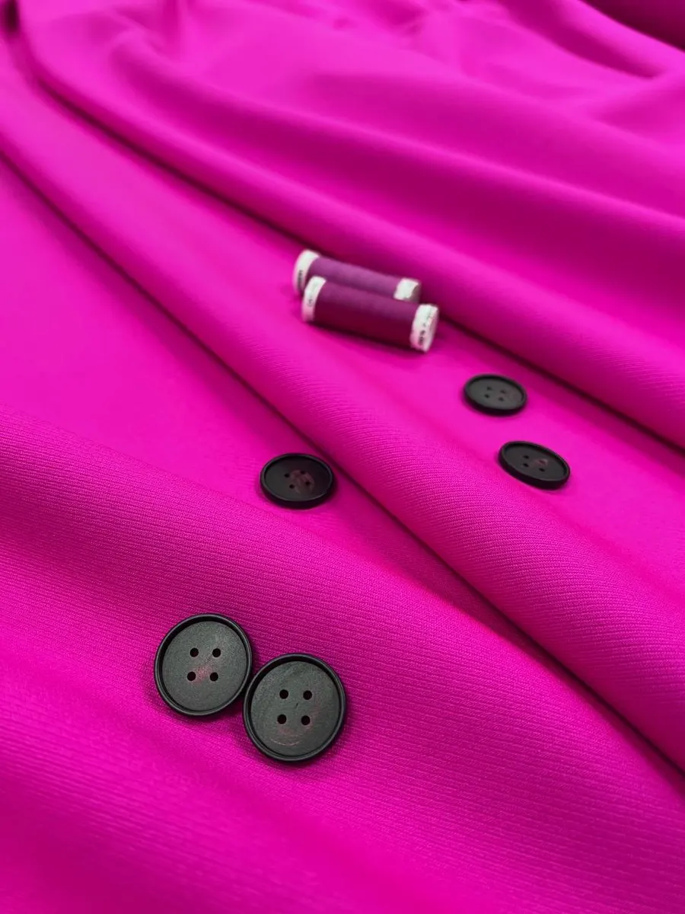
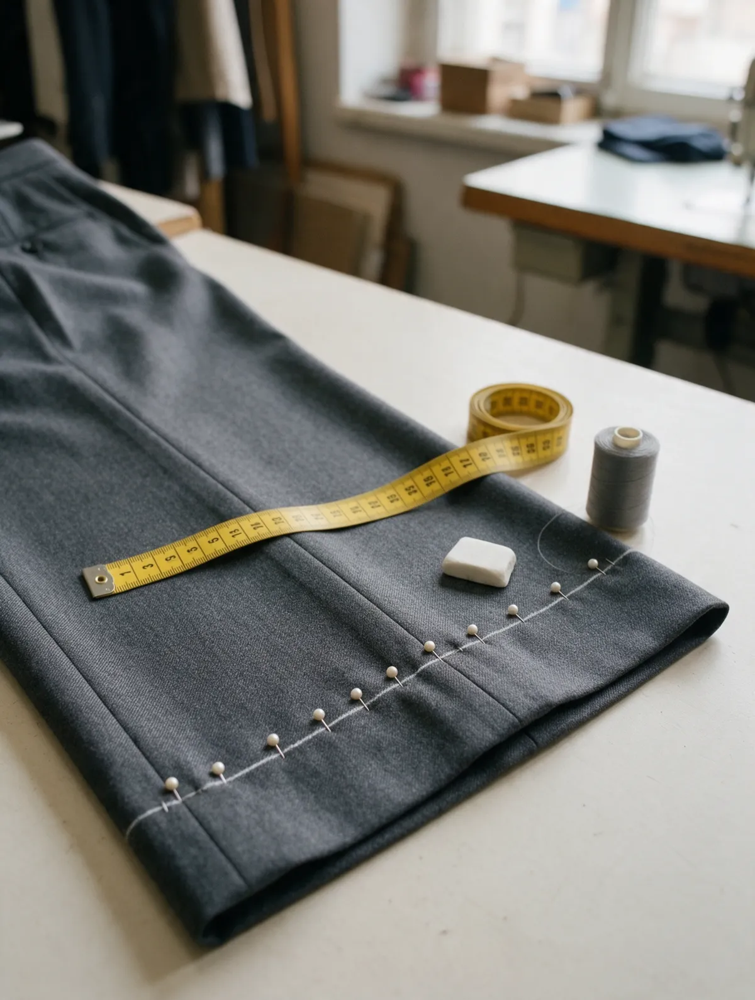
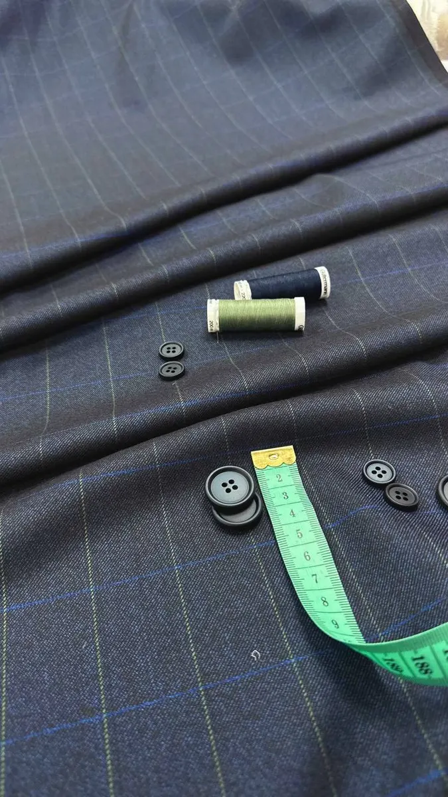
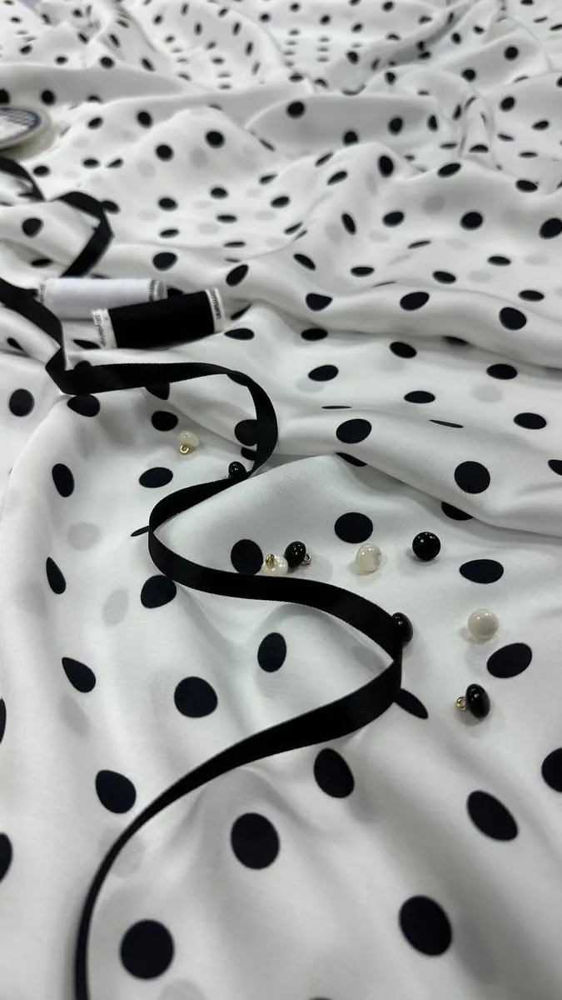

Ателье · ремонт одежды · мех и кожа · химчистка
Ателье у Пражской – посадим вещь по фигуре и заранее скажем, что получится
Ремонт и подгонка одежды, пошив, мех и кожа, химчистка. Москва, Кировоградская, 22Г, метро «Пражская».
- Рейтинг 5,0 на Яндекс Картах
- По записи, без очереди
- Срочный ремонт

Услуги и цены
Цену мастер называет до начала работы – по фото вещи или на примерке.
Ремонт и подгонка
- Подогнать брюки по фигуреуточнить
- Укоротить брюки или джинсыуточнить
- Приталить пиджак, поправить плечи и рукавауточнить
- Подшить или подогнать платьеуточнить
- Заменить молниюуточнить
- Перекроить вещьуточнить
Верхняя одежда, мех и кожа
- Ремонт пальто и куртокуточнить
- Перелицовка пальтоуточнить
- Ремонт меховых изделийуточнить
- Ремонт кожаных изделийуточнить
Пошив и химчистка
- Индивидуальный пошив одеждыуточнить
- Пошив шторуточнить
- Химчисткауточнить
- Срочный ремонтдоплата за срочностьуточнить
Как сдать вещь
- 01
Фото в WhatsApp
Пишете, что нужно сделать, и присылаете фото вещи.
- 02
Срок и цена
Отвечаем в часы работы: пн–пт 10:00–21:00, сб–вс 11:00–20:00.
- 03
Приходите по записи
Кировоградская, 22Г, этаж 2. Записываетесь на время – и не ждёте в очереди.
- 04
Забираете
Нужно быстрее – скажите сразу: за срочность можно доплатить.



За что нас хвалят в отзывах
Мастера знают по имени
В 77 отзывах из 100 на Яндекс Картах люди называют мастера Дилю по имени.
Сначала объясняем
Из отзывов: «предупредила обо всех возможных нюансах и объяснила все свои решения».
Без очереди
Из отзыва: «нет очереди, запись по телефону, клиент приходит ко времени».
Выручаем, когда срочно
Из отзыва: «Если нужно срочно, то мастер всегда идет на встречу».
Отзывы с Яндекс.Карт
«Диля помогла подогнать брюки (см. фото) по фигуре, в процессе замеров была внимательна к пожеланиям и охотно делилась экспертизой. Результат тоже порадовал - всё сделано в срок и очень качественно. Чуть позже отдал в работу спортивный пиджак (на фото не он) на приталивание, корректировку в плечах, спине и руках - Диля предупредила обо всех возможных нюансах и объяснила все свои решения, получилось тоже весьма добротно. Буду обращаться ещё!»
Тимофей С. · 6 июня
«Как же я рада, что теперь знаю такого мастера, как Диля. Уже несколько раз она меня спасала: подшивала джинсы, отреставрировала винтажную куртку, за которую больше никто не брался. Хоть я и съезжаю с этого района, с Дилей договорились оставаться на связи) Буду отправлять вещи курьером или приезжать сама. Диля, огромное вам спасибо!»
Лика Стуруа · 22 декабря 2024
«Прекрасное ателье. Мастер - золотые руки. Перелицевали пальто быстро, качественно. Вещь выглядит, как новая. Работа организована очень разумно - нет очереди, запись по телефону, клиент приходит ко времени. Пожалуй, лучшее ателье в нашем районе.»
Мария Т. · 9 июня
Отзывы с карточки на Яндекс.Картах, без правок.
Частые вопросы
Можно узнать цену, не приезжая?
Да. Напишите в WhatsApp, что нужно сделать, и пришлите фото вещи – или позвоните: +7 (925) 600-12-33.
Когда вы работаете?
Пн–пт с 10:00 до 21:00, в субботу и воскресенье с 11:00 до 20:00.
Нужно ли записываться?
Лучше записаться по телефону или в WhatsApp: придёте ко времени и не будете ждать.
Берёте мех и кожу?
Да: ремонт меховых и кожаных изделий, пальто и курток.
Пришлите фото вещи – ответим сроком и ценой
- Адрес
- Кировоградская ул., 22Г, этаж 2, Москва
- Часы
- пн–пт 10:00–21:00, сб–вс 11:00–20:00
- Телефон
- +7 (925) 600-12-33